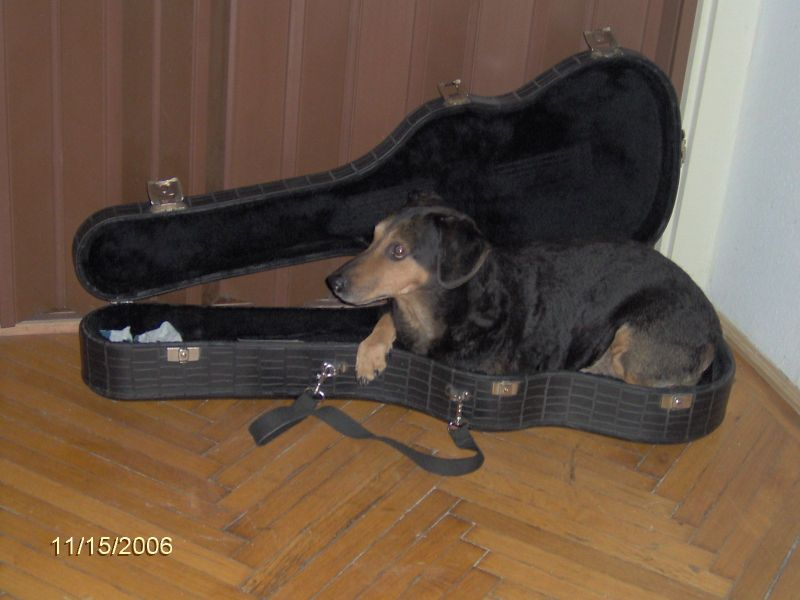

Bevezetés
A kutya vagy eb (Canis lupus familiaris) ujjon járó emlős ragadozó állat, a szürke farkas (Canis lupus) egy mára kihalt alfajának háziasított formája. Valószínűleg a legrégebben háziasított állatfaj. Az egyetlen olyan emlős állatfaj, amely tudományos nevében megkapta a familiaris, azaz a családhoz tartozó jelzőt. A kutyákat szokás a társállatok sorában emlegetni.
Ezenkívül tágabb értelemben kutyának neveznek a kutyafélék (Canidae) családján belül a valódi kutyaformák (Canini) nemzetségéhez tartozó több más fajt is: ilyenek például a kisfülű kutya (Atelocynus microtis), az ázsiai vadkutya (Cuon alpinus), a nyestkutya (Nyctereutes procyonoides), az afrikai vadkutya vagy hiénakutya (Lycaon pictus) és az őserdei kutya (Speothos venaticus). A háziasított kutyát mindezektől a házikutya elnevezéssel különböztetik meg. Szócikkünkben „kutya” alatt a házikutya értendő.
A kutyák munkatársként vagy munkaerőként (például: őrkutyák, vadászkutyák, szánhúzókutyák, vakvezetőkutyák), terápiás állatként, társállatként egyaránt szolgálják az embereket. Kelet-Ázsiában (vagy éhínség idején a világ többi részén is) emberi táplálék is lehet belőlük, ilyen célra tenyésztett fajta például a csau csau.
Kutyafajták
A kutyák nagyon sok módon segítik az embert. Minden feladathoz más a kutya optimális testfelépítése, illetve viselkedése,[25] ezért a különböző feladatokra kitenyésztett kutyafajták testfelépítése nagymértékben eltér. A világon az FCI mintegy 430 kutyafajtát tart nyilván, és a mai napig folyik új fajták kitenyésztése. Ezek közül egyre kevesebbet használnak arra a célra, amire kitenyésztették őket, így egyre több fajta válik ketté kiállítási és munka vérvonalra (például a német juhász és a labrador retriver).[26] Az eredeti feladatok eltűnésével a tenyésztési szempontokból is eltűnik az eredeti tenyésztési cél. Például napjainkban egyre több pásztorkutya fajta a nyájak őrzése és terelése helyett őrző-védő szerepkörben szerepel.[27] A kutyáknál megkülönböztetik a két vagy több fajta kereszteződéséből származó keverékeket és a fajtatiszta egyedeket. Utóbbiakat törzskönyvi nyilvántartásba veszik. Az azonos fajtájú egyedeket közös külső és belső jellemzők (úgynevezett vézenjegyek) kötik össze a közös származáson kívül. Ezeket a fajtastandard tartalmazza. A fajtajegyek némelyike negatívan hathat a kutya egészségére, ilyen rizikófaktor például a spánielek hosszú füle. Más külső jellemzők egyenesen genetikai rendellenességként foghatók fel, például a meztelenkutyák kevés szőrzete. A két fajtatiszta kutya szándékos keresztezéséből született kutyákat gyakran fajtakeresztezettnek nevezik.



A kutyafajták felosztása az FCI szerint
A kutyafajtákat tíz csoportba osztották. Ezeket megjelenés vagy szerep alapján alakították ki. A tíz csoport:
- fajtacsoport: pásztor- és juhászkutyák
- fajtacsoport: schnauzerek, pinscherek, őrző-védő ebek, masztiffok
- fajtacsoport: terrierek
- fajtacsoport: tacskók
- fajtacsoport: spitzek és ősi típusú kutyák
- fajtacsoport: kopók, vérebek
- fajtacsoport: vizslák, szetterek
- fajtacsoport: vízi vadászok
- fajtacsoport: társasági kutyák
- fajtacsoport: agarak